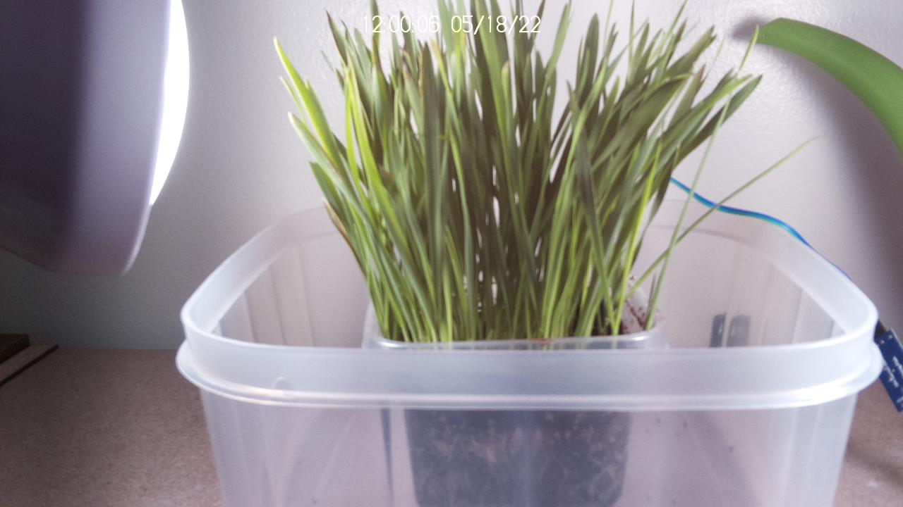

Welcome to the Catgrass Livecast!
Images are every 10 minutes. Updates to this website are pushed at 7AM, noon and 5PM.
🐱 VIDEO: Week 1 🐱

Click image to see in full HD!
Sensor readings at 2022-05-18T12:00:02.114687
- Soil moisture: 66.24%
- Humidity: 29.5%
- Temperature: 23.9C
Be sure to vote for the next feature!
- Timed lights instead of manual switch
- Water pump instead of hand-watering
- Automatic daily+weekly videos
??? GitHub ???

"I chew chew choose you, cat grass!"